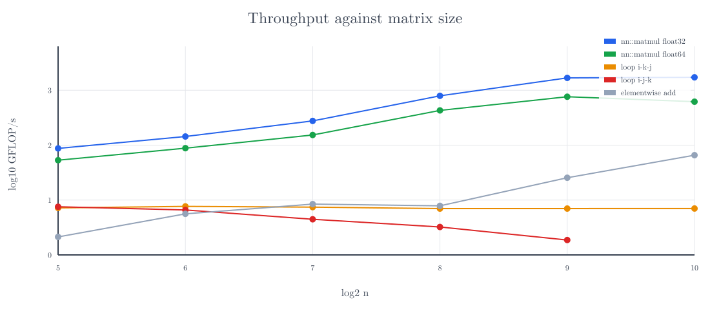
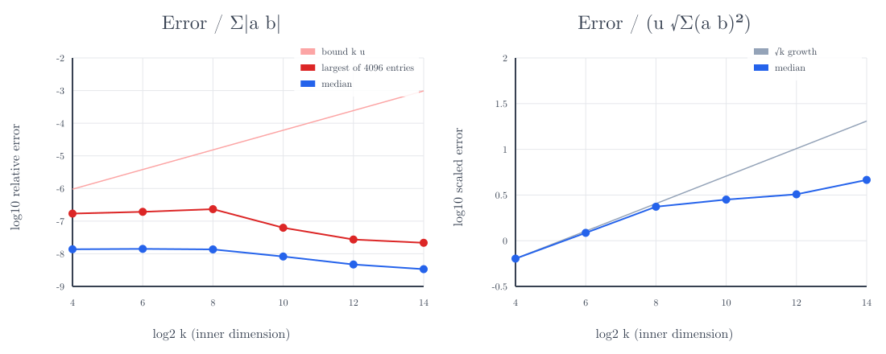
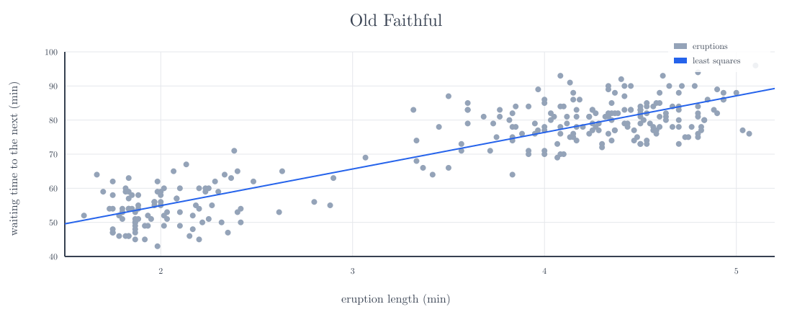

Hello, nn: The Build, the Kernels and Their Limits
Abstract
The first program in any numerical library asks what is there: which types, which backends, how many threads, how fast. This
report answers that for datamunge::nn with the new nn::build_info(), then asks what the numbers mean. A matrix product does
\(2n^3\) operations on \(3n^2\) numbers, so it can be limited by arithmetic rather than by memory. The library's float32 GEMM reaches about 160 to 170 GFLOP/s at \(n=1024\). A unit-stride triple loop reaches a fifth to a twentieth of that,
depending on how well the compiler vectorises it. A cache-hostile one falls to about 2 GFLOP/s, and an elementwise addition, limited by memory traffic, stays far below the GEMM. A float32 product's rounding
error stays far inside its worst-case bound \(ku\) as the inner dimension \(k\) grows to 16 384. Scaled by the random-walk size \(u\sqrt{\sum(ab)^2}\), it grows like \(\sqrt k\) up to \(k=256\) and then
much more slowly, the signature of a blocked kernel. As a first model, least squares for Old Faithful through nn::solve matches stats::LM to
\(7\times10^{-14}\) in float64. In float32 it is off by \(1.3\times10^{-4}\), as the condition number 159 of \(X^\top X\) predicts. The library gained nn::build_info, nn::BuildInfo and nn::matmul_flops.
The problem
TensorFlow's first example lists the framework's devices and evaluates a
constant in a session. Datamunge evaluates tensor operations eagerly. The
examples below use the default CPU context and measure its matrix products.
Use nn::build_info() for the host build's compiler, thread count, and math
libraries, and dm::compute::probe() to check whether an explicit backend
and device index can create a context. Use dm::compute::device_count()
to enumerate every ordinal visible to each backend. CUDA and Vulkan count
devices independently, so the same GPU can appear under both backends.
dm::compute::nvidia_telemetry() reads the installed NVIDIA Management
Library independently of CUDA execution support. NVML ordinals can differ
from CUDA ordinals when the CUDA process sees a restricted or reordered
device list. The readings are snapshots, and each queried metric can be
unavailable independently. NVIDIA NVML device queries.
The method
Counting the work of a matrix product
The product \(C=AB\) of an \([m,k]\) and a \([k,n]\) matrix has \(mn\) entries, each a sum of \(k\) products: \(mk n\) multiplications and \(mkn\) additions, so
nn::matmul_flops(m, k, n) \(=2mkn\). Throughput is flops divided by time, in GFLOP/s. A core's peak is its clock rate times the flops per cycle. With
fused multiply-add on 16-wide float32 vectors (AVX-512) and two vector units, that is 64 flops per cycle, about 200 GFLOP/s per core at 3 GHz. Float64 vectors hold half as many numbers, so
the peak halves.
Arithmetic intensity
The arithmetic intensity of a kernel is flops per byte of memory traffic. For square float32 matrices, the product reads and writes at least \(3n^2\) numbers (\(12n^2\) bytes) and does \(2n^3\) flops, an intensity of \(n/6\) flops per byte, which grows with \(n\). Elementwise addition does \(n^2\) flops on \(12n^2\) bytes, \(1/12\) per byte, at every size. Memory delivers some tens of bytes per nanosecond, so a kernel with intensity well below about ten flops per byte runs at the speed of memory, and one above it can run at the speed of arithmetic (the roofline model, Williams, Waterman and Patterson, 2009). A product reaches that speed only if each number loaded from memory is reused about \(n\) times while it sits in registers and cache. That is what blocked GEMM kernels arrange (Goto and van de Geijn, 2008), and what a textbook triple loop does not. The loop order matters too. With \(i\)-\(j\)-\(k\) the inner loop walks down a column of \(B\), a stride of \(n\) numbers, and every step can miss the cache. With \(i\)-\(k\)-\(j\) it walks along rows of \(B\) and \(C\) at unit stride, which the compiler can vectorise.
Rounding in a product
Each entry \(c_{ij}=\sum_{l=1}^ka_{il}b_{lj}\) is a sum of \(k\) rounded products. By the analysis of the custom-kernel report (custom_op_kernel), computing it in floating point with
unit roundoff \(u\) gives
whatever the order of summation (Higham, 2002, §3.5). For random signs the errors partly cancel. With one sequential accumulator their typical size is about \(u\sqrt k\) times the root-mean-square partial sum, and that partial sum grows like \(\sqrt{\sum_l(a_{il}b_{lj})^2}\cdot\sqrt k\). A blocked kernel that keeps many short partial sums, and adds the partial sums at the end, has fewer roundings per term and a smaller error. Its scaled error then grows more slowly than \(\sqrt k\).
Conditioning of least squares
The least-squares coefficients solve the normal equations \(X^\top X\beta=X^\top y\). A perturbation of relative size \(u\) in \(X^\top X\) moves \(\beta\) by a relative amount up to about \(\kappa(X^\top X)\,u\), where \(\kappa\) is the condition number, the ratio of the largest to the smallest eigenvalue. In float32 a condition number of 100 to 1000 therefore costs two or three of the seven available digits.
Simple examples
The build, and the first tensors
#include <dm/dm.hpp>
namespace nn = dm::nn;
using nn::Tensor;
int main() {
std::print("{}\n", nn::build_info().to_markdown());
namespace compute = dm::compute;
using compute::Backend;
std::print("| Backend | Ordinal | Available | Device or diagnostic |\n"
"| :--- | ---: | :--- | :--- |\n");
for (const auto backend : {Backend::CPU, Backend::CUDA, Backend::Vulkan}) {
const auto name = compute::backend_name(backend);
std::uint32_t count = 0;
try {
count = compute::device_count(backend);
} catch (const std::runtime_error& error) {
std::print("| {} | — | false | {} |\n", name, error.what());
continue;
}
if (count == 0) std::print("| {} | — | false | No visible devices |\n", name);
for (std::uint32_t i = 0; i < count; ++i) {
const auto info = compute::probe({backend, i});
std::print("| {} | {} | {} | {} |\n", name, i,
info.available, info.available ? info.name : info.diagnostic);
}
}
std::print("\n");
const auto telemetry = compute::nvidia_telemetry();
const auto label = [](const std::string& value) { return value.empty() ? "—" : value; };
const auto version = [](const std::optional<std::pair<int, int>>& value) {
return value ? std::format("{}.{}", value->first, value->second) : "—";
};
if (!telemetry.diagnostic.empty()) {
std::println("NVIDIA telemetry unavailable. {}\n", telemetry.diagnostic);
} else {
std::println("NVIDIA driver {}, NVML {}, CUDA driver compatibility {} ({} devices).\n",
label(telemetry.driver_version), label(telemetry.nvml_version),
version(telemetry.cuda_version), telemetry.devices.size());
const auto metric = [](const auto& value) { return value ? std::format("{}", *value) : "—"; };
const auto mib = [](const auto& bytes) {
return bytes ? std::format("{:.1f}", *bytes / 1048576.) : "—";
};
std::println("| NVML index | Device | Compute capability | Cores | Used MiB | Total MiB | "
"Graphics MHz | Memory MHz | °C | W | GPU % | Memory % |\n"
"| ---: | :--- | :--- | ---: | ---: | ---: | ---: | ---: | ---: | ---: | ---: | ---: |");
for (const auto& d : telemetry.devices)
std::println("| {} | {} | {} | {} | {} | {} | {} | {} | {} | {} | {} | {} |",
d.index, label(d.name), version(d.compute_capability), metric(d.cores),
mib(d.memory_used_bytes), mib(d.memory_total_bytes), metric(d.graphics_clock_mhz),
metric(d.memory_clock_mhz), metric(d.temperature_celsius), metric(d.power_watts),
metric(d.gpu_utilization_percent), metric(d.memory_utilization_percent));
std::println("");
}
// Hello, tensors: values exist as soon as the call returns; there is no session to run.
const Tensor a = nn::tensor({{1, 2}, {3, 4}}), b = nn::tensor({{5, 6}, {7, 8}});
std::print("- a + b = {}\n", (a + b).values_str());
std::print("- a @ b = {} ({} flops)\n", nn::matmul(a, b).values_str(), nn::matmul_flops(2, 2, 2));
std::print("- mean(a) = {}, a cast to int32 = {} ({})\n", nn::mean(a).item(), nn::cast(a, nn::DType::Int32).values_str(),
nn::dtype_name(nn::cast(a, nn::DType::Int32).dtype()));
}| property | value |
|---|---|
| version | 0.0.1 |
| execution | eager, define-by-run autograd |
| device | CPU (one host device) |
| dtypes | bool (1 B), int32 (4 B), int64 (8 B), float32 (4 B), float64 (8 B) |
| GEMM backend | inhouse-avx512 |
| LAPACK | no (built-in kernels) |
| nn threads | 16 |
| hardware threads | 32 |
| architecture | x86_64 |
| compiler | clang 21.1.8 |
| CPU features | SSE4.2, AVX, AVX2, FMA, AVX512F |
| Backend | Ordinal | Available | Device or diagnostic |
|---|---|---|---|
| cpu | 0 | true | CPU |
| cuda | 0 | true | NVIDIA GeForce RTX 5080 Laptop GPU |
| vulkan | 0 | true | AMD Ryzen 9 9955HX 16-Core Processor (RADV RAPHAEL_MENDOCINO) |
| vulkan | 1 | true | NVIDIA GeForce RTX 5080 Laptop GPU |
| vulkan | 2 | true | llvmpipe (LLVM 21.1.8, 256 bits) |
NVIDIA driver 595.71.05, NVML 13.595.71.05, CUDA driver compatibility 13.2 (1 devices).
| NVML index | Device | Compute capability | Cores | Used MiB | Total MiB | Graphics MHz | Memory MHz | °C | W | GPU % | Memory % |
|---|---|---|---|---|---|---|---|---|---|---|---|
| 0 | NVIDIA GeForce RTX 5080 Laptop GPU | 12.0 | 7680 | 573.6 | 16303.0 | 1575 | 11001 | 65 | 25.457 | 7 | 1 |
- a + b = [[6, 8], [10, 12]]
- a @ b = [[19, 22], [43, 50]] (16 flops)
- mean(a) = 2.5, a cast to int32 = [[1, 2], [3, 4]] (int32)
The build table reports the selected host kernels and available thread count. A failed probe reports why the requested context is unavailable. The tensor operations execute eagerly: \(a+b\) and \(ab\) have values as soon as the calls return. By hand, \(ab=\begin{pmatrix}1\cdot5+2\cdot7&1\cdot6+2\cdot8\\3\cdot5+4\cdot7&3\cdot6+4\cdot8\end{pmatrix}=\begin{pmatrix}19&22\\43&50\end{pmatrix}\), which takes eight multiplications and eight additions, \(2\cdot2^3=16\) flops.
Checking the theory
Throughput: arithmetic-bound against memory-bound
The program times nn::matmul in float32 and float64, two triple loops in float32, and an elementwise addition, for square matrices from
\(n=32\) to 1024. Each time is the best of several runs.
#include <dm/dm.hpp>
namespace nn = dm::nn;
using nn::Tensor;
// Textbook triple loops over row-major float32 matrices: C = A B.
void matmul_ijk(const float* A, const float* B, float* C, int n) { // inner loop strides down a column of B
for (int i = 0; i < n; ++i)
for (int j = 0; j < n; ++j) {
float s = 0;
for (int k = 0; k < n; ++k) s += A[i * n + k] * B[k * n + j];
C[i * n + j] = s;
}
}
void matmul_ikj(const float* A, const float* B, float* C, int n) { // inner loop walks rows: unit stride
std::fill(C, C + n * n, 0.0f);
for (int i = 0; i < n; ++i)
for (int k = 0; k < n; ++k) {
const float a = A[i * n + k];
for (int j = 0; j < n; ++j) C[i * n + j] += a * B[k * n + j];
}
}
int main() {
std::filesystem::create_directories("build");
nn::NoGradGuard guard;
nn::Generator gen(1);
auto best_seconds = [](auto&& body, double budget) {
double best = 1e300, spent = 0;
for (int r = 0; r < 50 && (r < 3 || spent < budget); ++r) {
const auto t0 = std::chrono::steady_clock::now();
body();
const double s = std::chrono::duration<double>(std::chrono::steady_clock::now() - t0).count();
best = std::min(best, s), spent += s;
}
return best;
};
std::print("| n | flops 2n³ | nn::matmul float32 (GFLOP/s) | nn::matmul float64 | triple loop i-k-j | triple loop i-j-k | elementwise add (GFLOP/s) |\n");
std::print("| ---: | ---: | ---: | ---: | ---: | ---: | ---: |\n");
std::vector<double> ln, g32, g64, gikj, gijk, gadd;
for (int n : {32, 64, 128, 256, 512, 1024}) {
const Tensor A = nn::normal({n, n}, 0, 1, gen), B = nn::normal({n, n}, 0, 1, gen);
const Tensor A64 = nn::cast(A, nn::DType::Float64), B64 = nn::cast(B, nn::DType::Float64);
const double f = nn::matmul_flops(n, n, n);
const double t32 = best_seconds([&] { (void)nn::matmul(A, B); }, 0.3);
const double t64 = best_seconds([&] { (void)nn::matmul(A64, B64); }, 0.3);
const double tadd = best_seconds([&] { (void)(A + B); }, 0.2);
const auto av = A.to_vector<float>(), bv = B.to_vector<float>();
std::vector<float> cv(static_cast<std::size_t>(n) * n);
const double tikj = n <= 1024 ? best_seconds([&] { matmul_ikj(av.data(), bv.data(), cv.data(), n); }, 0.3) : 0;
const double tijk = n <= 512 ? best_seconds([&] { matmul_ijk(av.data(), bv.data(), cv.data(), n); }, 0.3) : 0;
ln.push_back(std::log2(n));
g32.push_back(f / t32 / 1e9), g64.push_back(f / t64 / 1e9), gikj.push_back(f / tikj / 1e9), gadd.push_back(double(n) * n / tadd / 1e9);
if (n <= 512) gijk.push_back(f / tijk / 1e9);
std::print("| {} | {:.2e} | {:.1f} | {:.1f} | {:.2f} | {} | {:.2f} |\n", n, f, g32.back(), g64.back(), gikj.back(),
n <= 512 ? std::format("{:.2f}", gijk.back()) : std::string("not run"), gadd.back());
}
std::print("\nArithmetic intensity at n = 1024: matmul {:.0f} flops per byte of its inputs and output, elementwise add {:.3f}.\n",
nn::matmul_flops(1024, 1024, 1024) / (3.0 * 1024 * 1024 * 4), 1.0 / 12.0);
auto plot = dm::graphics::RPlot::create();
auto lg = [](std::vector<double> v) { for (auto& e : v) e = std::log10(e); return v; };
std::vector<double> ln5(ln.begin(), ln.begin() + 5);
plot.lines(ln, lg(g32), "nn::matmul float32", dm::graphics::RGB{37, 99, 235}, 2.0).points(ln, lg(g32), "", dm::graphics::RGB{37, 99, 235}, 5.0);
plot.lines(ln, lg(g64), "nn::matmul float64", dm::graphics::RGB{22, 163, 74}, 2.0).points(ln, lg(g64), "", dm::graphics::RGB{22, 163, 74}, 5.0);
plot.lines(ln, lg(gikj), "loop i-k-j", dm::graphics::RGB{234, 140, 0}, 2.0).points(ln, lg(gikj), "", dm::graphics::RGB{234, 140, 0}, 5.0);
plot.lines(ln5, lg(gijk), "loop i-j-k", dm::graphics::RGB{220, 38, 38}, 2.0).points(ln5, lg(gijk), "", dm::graphics::RGB{220, 38, 38}, 5.0);
plot.lines(ln, lg(gadd), "elementwise add", dm::graphics::RGB{148, 163, 184}, 2.0).points(ln, lg(gadd), "", dm::graphics::RGB{148, 163, 184}, 5.0);
plot.x_limits(5, 10).y_limits(0, 3.8).title("Throughput against matrix size").x_label("log2 n").y_label("log10 GFLOP/s");
plot.size(1100, 480);
plot.save_svg("build/hello_tf_gemm.svg");
}| n | flops 2n³ | nn::matmul float32 (GFLOP/s) | nn::matmul float64 | triple loop i-k-j | triple loop i-j-k | elementwise add (GFLOP/s) |
|---|---|---|---|---|---|---|
| 32 | 6.55e+04 | 87.3 | 53.2 | 7.19 | 7.55 | 2.13 |
| 64 | 5.24e+05 | 143.8 | 88.1 | 7.66 | 6.59 | 5.60 |
| 128 | 4.19e+06 | 276.3 | 153.1 | 7.42 | 4.46 | 8.43 |
| 256 | 3.36e+07 | 792.1 | 429.4 | 6.99 | 3.23 | 7.84 |
| 512 | 2.68e+08 | 1681.0 | 762.3 | 6.99 | 1.87 | 25.48 |
| 1024 | 2.15e+09 | 1720.9 | 619.0 | 7.01 | not run | 65.65 |
Arithmetic intensity at n = 1024: matmul 171 flops per byte of its inputs and output, elementwise add 0.083.

The measurements follow the model.
- The library GEMM approaches its plateau by \(n=128\), at about 160 to 170 GFLOP/s in float32 and half that in float64, as the vector widths predict.
- The \(i\)-\(k\)-\(j\) loop holds a constant rate at every size, several times slower than the GEMM: it vectorises, but it reloads \(B\) from memory for every row of \(C\). Its rate depends on the compiler's vectorisation. Builds of this report have measured from 9 to 33 GFLOP/s.
- The \(i\)-\(j\)-\(k\) loop does the same arithmetic in the cache-hostile order. It falls to about 2 GFLOP/s at \(n=512\) as the column stride outgrows the caches.
- Elementwise addition does \(1/12\) flop per byte against the GEMM's \(n/6\) (171 at \(n=1024\)). It stays an order of magnitude below the GEMM even at its best.
The jump in addition between \(n=256\) and 512 is the library's parallel threshold. Kernels with fewer than 65 536 elements run on one thread, because starting threads would cost more than the work. Absolute numbers depend on the machine. The orders of magnitude between the curves are the stable part.
Accuracy: float32 products against the bound
The program multiplies \(64\times k\) by \(k\times64\) float32 matrices of standard normal entries, for inner dimensions \(k=16\) to 16 384. It compares every one of the 4096 entries with the float64 product of the same entries.
#include <dm/dm.hpp>
namespace nn = dm::nn;
using nn::Tensor;
int main() {
std::filesystem::create_directories("build");
nn::NoGradGuard guard;
nn::Generator gen(2);
// Rounding error of a float32 product C = A B with inner dimension k, against the float64 product
// of the same (float32-representable) entries. Per entry, |error| <= gamma_k sum_l |a_il b_lj|.
const double u = std::ldexp(1.0, -24);
std::print("| k | median relative error | largest relative error | median error / (u √Σ(ab)²) | worst-case bound k u |\n| ---: | ---: | ---: | ---: | ---: |\n");
std::vector<double> lk, med, worst, wmed;
for (int k : {16, 64, 256, 1024, 4096, 16384}) {
const Tensor A = nn::normal({64, k}, 0, 1, gen), B = nn::normal({k, 64}, 0, 1, gen);
const auto c32 = nn::matmul(A, B).to_vector<float>();
const auto c64 = nn::matmul(nn::cast(A, nn::DType::Float64), nn::cast(B, nn::DType::Float64)).to_vector<double>();
const auto scale = nn::matmul(nn::abs(nn::cast(A, nn::DType::Float64)), nn::abs(nn::cast(B, nn::DType::Float64))).to_vector<double>();
// The random-walk scale of the rounding errors: sqrt(sum_l (a_il b_lj)^2).
const auto rms = nn::sqrt(nn::matmul(nn::square(nn::cast(A, nn::DType::Float64)), nn::square(nn::cast(B, nn::DType::Float64)))).to_vector<double>();
std::vector<double> walk(c32.size());
for (std::size_t i = 0; i < walk.size(); ++i) walk[i] = std::abs(c32[i] - c64[i]) / (u * rms[i]);
std::ranges::sort(walk);
std::vector<double> rel(c32.size());
for (std::size_t i = 0; i < rel.size(); ++i) rel[i] = std::abs(c32[i] - c64[i]) / scale[i]; // error relative to sum |a b|
std::ranges::sort(rel);
lk.push_back(std::log2(k));
med.push_back(rel[rel.size() / 2]);
worst.push_back(rel.back());
wmed.push_back(walk[walk.size() / 2]);
std::print("| {} | {:.2e} | {:.2e} | {:.2f} | {:.2e} |\n", k, med.back(), worst.back(), walk[walk.size() / 2], k * u);
}
// Left: error relative to the bound's scale sum |a b|. Right: in units of u sqrt(sum (a b)^2), against
// the sqrt(k) growth a single sequential accumulator would show.
auto lg = [](std::vector<double> v) { for (auto& e : v) e = std::log10(e); return v; };
auto left = dm::graphics::RPlot::create();
std::vector<double> bk{4, 14}, bound{std::log10(16 * u), std::log10(16384 * u)};
left.lines(bk, bound, "bound k u", dm::graphics::RGB{252, 165, 165}, 1.5);
left.lines(lk, lg(worst), "largest of 4096 entries", dm::graphics::RGB{220, 38, 38}, 2.0).points(lk, lg(worst), "", dm::graphics::RGB{220, 38, 38}, 5.0);
left.lines(lk, lg(med), "median", dm::graphics::RGB{37, 99, 235}, 2.0).points(lk, lg(med), "", dm::graphics::RGB{37, 99, 235}, 5.0);
left.x_limits(4, 14).y_limits(-9, -2).title("Error / Σ|a b|").x_label("log2 k (inner dimension)").y_label("log10 relative error");
auto right = dm::graphics::RPlot::create();
std::vector<double> sq{std::log10(wmed[0]), std::log10(wmed[0]) + 0.5 * std::log10(16384.0 / 16)};
right.lines(bk, sq, "√k growth", dm::graphics::RGB{148, 163, 184}, 1.5);
right.lines(lk, lg(wmed), "median", dm::graphics::RGB{37, 99, 235}, 2.0).points(lk, lg(wmed), "", dm::graphics::RGB{37, 99, 235}, 5.0);
right.x_limits(4, 14).y_limits(-0.5, 2.0).title("Error / (u √Σ(a b)²)").x_label("log2 k (inner dimension)").y_label("log10 scaled error");
auto plot = dm::graphics::RLayout::create(1, 2);
plot.add(left);
plot.add(right);
plot.size(1100, 440).fit_panels();
plot.save_svg("build/hello_tf_accuracy.svg");
}| k | median relative error | largest relative error | median error / (u √Σ(ab)²) | worst-case bound k u |
|---|---|---|---|---|
| 16 | 1.37e-08 | 1.70e-07 | 0.64 | 9.54e-07 |
| 64 | 1.41e-08 | 1.93e-07 | 1.22 | 3.81e-06 |
| 256 | 1.36e-08 | 2.33e-07 | 2.36 | 1.53e-05 |
| 1024 | 8.25e-09 | 6.27e-08 | 2.82 | 6.10e-05 |
| 4096 | 4.70e-09 | 2.74e-08 | 3.22 | 2.44e-04 |
| 16384 | 3.38e-09 | 2.17e-08 | 4.63 | 9.77e-04 |

Every entry is inside the worst-case bound, by a factor of 5 at \(k=16\) and of 50 000 at \(k=16\,384\) for the largest entry. The bound grows like \(k\). The errors relative to \(\sum\lvert ab\rvert\) instead fall as \(k\) grows, because cancellation makes the sum much smaller than the sum of absolute values. On the random-walk scale (right) the median error grows like \(\sqrt k\), as one sequential accumulator would, up to \(k=256\), and then almost stops growing: 2.3 at \(k=256\) and 3.7 at \(k=16\,384\), where a single accumulator would reach about 20. The kernel evidently sums blocks of a few hundred terms and then combines the blocks, which is the pairwise effect of the custom-kernel report.
A dataset: least squares for Old Faithful
The first model is the oldest one. For 272 eruptions of the Old Faithful geyser, the waiting time to the next eruption is fitted as a straight
line in the length of the current one, by solving the normal equations with nn::solve in both precisions and comparing with stats::LM.
#include <dm/dm.hpp>
namespace nn = dm::nn;
using nn::Tensor;
int main() {
std::filesystem::create_directories("build");
// Old Faithful: waiting time to the next eruption (min) against eruption length (min), 272 eruptions.
const auto geyser = dm::datasets::faithful();
const auto x = geyser.get_column<double>("eruptions").values(), y = geyser.get_column<double>("waiting").values();
const std::int64_t n = static_cast<std::int64_t>(x.size());
const auto lm = dm::stats::LM(dm::formula("waiting ~ eruptions"), geyser).coefficients();
// The same fit with nn: the normal equations X^T X beta = X^T y, in float32 and float64.
std::vector<double> design;
for (double e : x) design.push_back(1.0), design.push_back(e);
std::print("| precision | intercept | slope | largest error against stats::LM |\n| :--- | ---: | ---: | ---: |\n");
for (auto dt : {nn::DType::Float32, nn::DType::Float64}) {
const Tensor X = nn::from_vector(design, {n, 2}).to(dt), Y = nn::from_vector(y, {n, 1}).to(dt);
const Tensor Xt = nn::transpose(X);
const auto beta = nn::solve(nn::matmul(Xt, X), nn::matmul(Xt, Y)).to_vector<double>();
std::print("| {} | {:.6f} | {:.6f} | {:.1e} |\n", nn::dtype_name(dt), beta[0], beta[1],
std::max(std::abs(beta[0] - lm[0]), std::abs(beta[1] - lm[1])));
}
const Tensor X = nn::from_vector(design, {n, 2});
const auto ev = nn::eigvalsh(nn::matmul(nn::transpose(X), X)).to_vector<double>();
std::print("\nstats::LM: waiting = {:.6f} + {:.6f} eruptions. Condition number of XᵀX: {:.1f}; κ u in float32 = {:.1e}.\n",
lm[0], lm[1], ev[1] / ev[0], ev[1] / ev[0] * std::ldexp(1.0, -24));
auto plot = dm::graphics::RPlot::create();
plot.points(x, y, "eruptions", dm::graphics::RGB{148, 163, 184}, 4.0);
plot.lines({1.5, 5.2}, {lm[0] + 1.5 * lm[1], lm[0] + 5.2 * lm[1]}, "least squares", dm::graphics::RGB{37, 99, 235}, 2.0);
plot.x_limits(1.5, 5.2).y_limits(40, 100).title("Old Faithful").x_label("eruption length (min)").y_label("waiting time to the next (min)");
plot.size(1100, 440);
plot.save_svg("build/hello_tf_faithful.svg");
}| precision | intercept | slope | largest error against stats::LM |
|---|---|---|---|
| float32 | 33.474529 | 10.729604 | 1.3e-04 |
| float64 | 33.474397 | 10.729641 | 1.5e-13 |
stats::LM: waiting = 33.474397 + 10.729641 eruptions. Condition number of XᵀX: 159.1; κ u in float32 = 9.5e-06.

Each extra minute of eruption adds 10.73 minutes to the wait, from an intercept of 33.47 minutes. In float64 the normal equations reproduce stats::LM to
\(7\times10^{-14}\). In float32 they are off by \(1.3\times10^{-4}\) in the intercept, a relative error of \(4\times10^{-6}\), close to the predicted \(\kappa u=9.5\times10^{-6}\) with \(\kappa=159\). The condition number is that
large because eruption lengths, 1.6 to 5.1 minutes, are far from zero, so the columns for the intercept and the slope are nearly parallel.
Centring the predictor would reduce \(\kappa\), as it did for gradient descent in the automatic-differentiation report (autodiff). Float32 is enough for training a network,
where gradients are noisy anyway, but not for reporting coefficients to six digits from an ill-conditioned system.
Conclusion
nn::build_info() reports the host build and dm::compute::probe() reports
available contexts. The CPU measurements quantify the effect of its kernel and
floating-point choices. A matrix product's arithmetic intensity grows
with \(n\), so a blocked GEMM can run at the speed of arithmetic: about 160 to 170 GFLOP/s here, 5 to 20 times a vectorised triple loop and 70 or more times a cache-hostile
one. An elementwise operation's intensity is fixed and small, so it runs at the speed of memory. Float32 products stay far inside their worst-case
rounding bound, and a blocked kernel keeps the typical error from growing like \(\sqrt k\). The first model, least squares in float32, lost the digits the condition number predicted.
References
- M. Abadi et al. (2016). "TensorFlow: a system for large-scale machine learning". OSDI, 265–283.
- K. Goto and R. A. van de Geijn (2008). "Anatomy of high-performance matrix multiplication". ACM Transactions on Mathematical Software 34(3), 12. doi:10.1145/1356052.1356053
- S. Williams, A. Waterman and D. Patterson (2009). "Roofline: an insightful visual performance model for multicore architectures". Communications of the ACM 52(4), 65–76. doi:10.1145/1498765.1498785
- N. J. Higham (2002). Accuracy and Stability of Numerical Algorithms, 2nd edition, chapters 3 and 20. SIAM. doi:10.1137/1.9780898718027
- A. Azzalini and A. W. Bowman (1990). "A look at some data on the Old Faithful geyser". Applied Statistics 39(3), 357–365. doi:10.2307/2347385